| 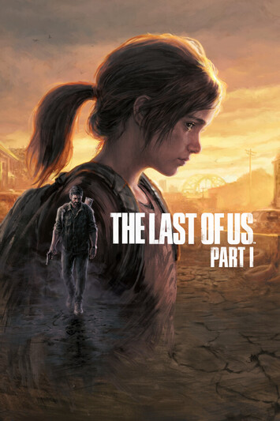 | 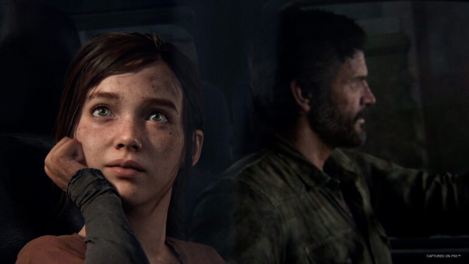 | 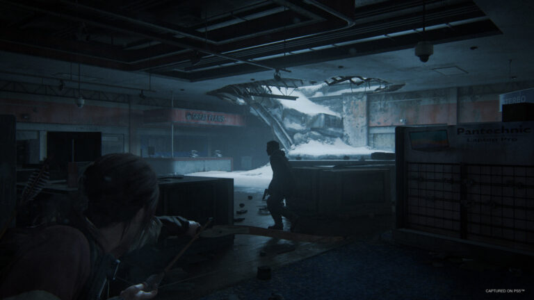 | 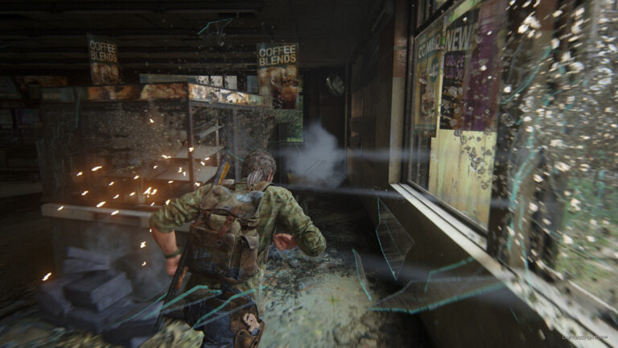 | 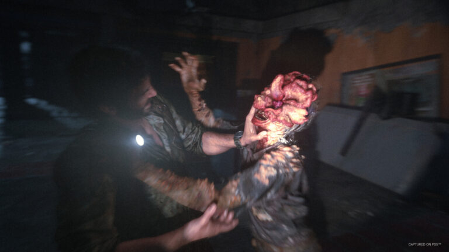 | 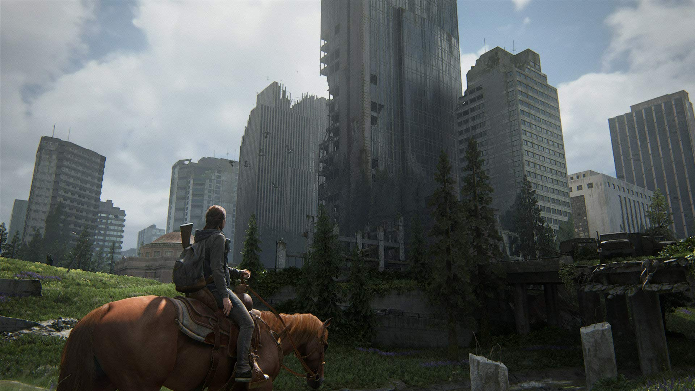 |
200’ün üzerinde Yılın Oyunu ödülü alan The Last of Us™’taki duygu yüklü hikâye anlatımına ve unutulmaz karakterlere tanıklık edin. Hastalıklıların ve acımasız afetzedelerin dört bir yanda kol gezdiği, yıkıma uğramış bir uygarlıkta hayattan nasibini almış olan baş karakter Joel, 14 yaşındaki Ellie’yi askerî karantina bölgesinden çıkarması için tutulur. Başta küçük bir mesele gibi görünen bu iş, ülke boyunca devam eden amansız bir yolculuğa dönüşür. The Last of Us’ın tek oyunculu hikâyesinin tamamını ve Ellie ile en iyi arkadaşı Riley’nin hayatlarını sonsuza dek değiştiren olayların derinine inen meşhur ana hikâye öncesi bölümü Left Behind’ı içerir. The Last of Us™ Part I Dijital Deluxe Sürüm şunları içerir: The Last of Us tek oyunculu hikâye modu ve Left Behind ana hikâye öncesi bölümü Şu oyun içi ögeler erkenden açılır: Artırılmış Üretim Hızı Yeteneği Artırılmış İyileşme Hızı Yeteneği 9mm Cephane Doldurma Hızı Artırma Geliştirmesi Tüfek Şarjörü Kapasitesi Artırma Geliştirmesi Patlayıcı Oklar Oynanış Düzenleyicisi Koyu Mavi Filtresi Speedrun Modu Altı Silah Kaplaması: Siyah Altın 9mm Tabanca, Gümüş İşlemeli 9mm Tabanca, Kauçuk Taktiksel Pompalı Tüfek, Yontulmuş Meşe Pompalı Tüfek, Kar Beyazı Yay, Karbon Siyahı Yay
Tür: Açık Dünya Oyunları, Aksiyon, Oyun, Strateji, Yıldız Oyunlar
Platform: PC
Boyut: 77.7 GB
Crack: RELOADED
Tarih: : 28 Mart 2023
Kaynak: Zamunda
Dil: Türkçe Dublaj
| 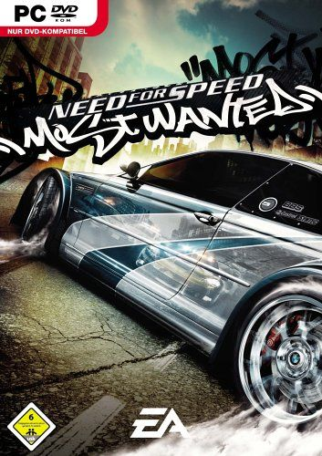 | 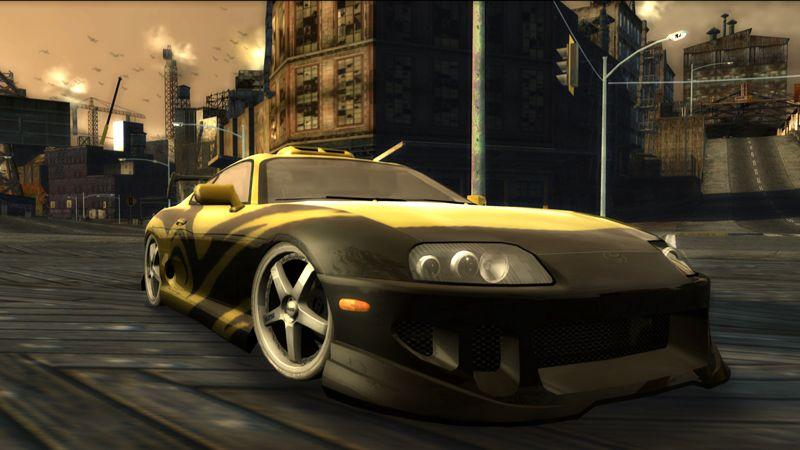 | 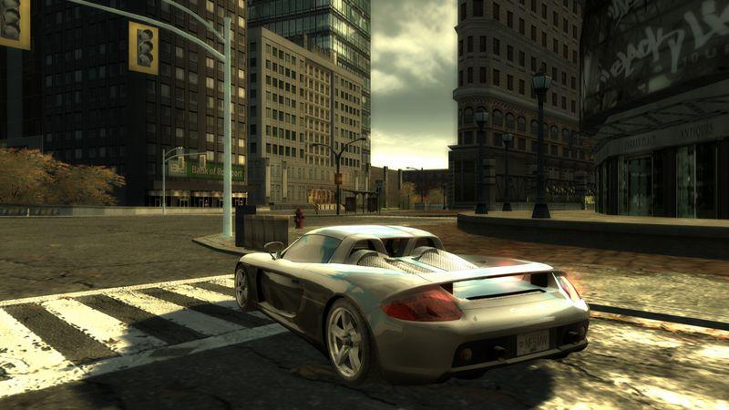 | 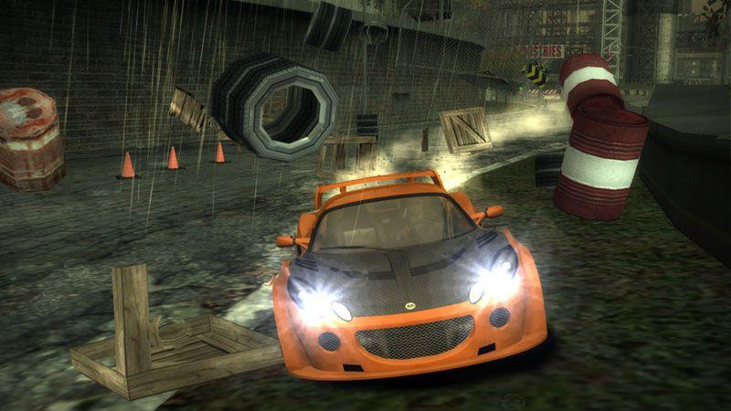 | 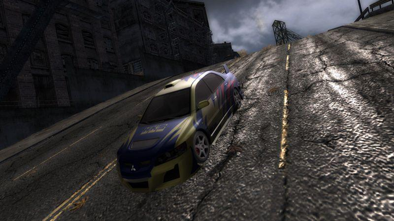 | 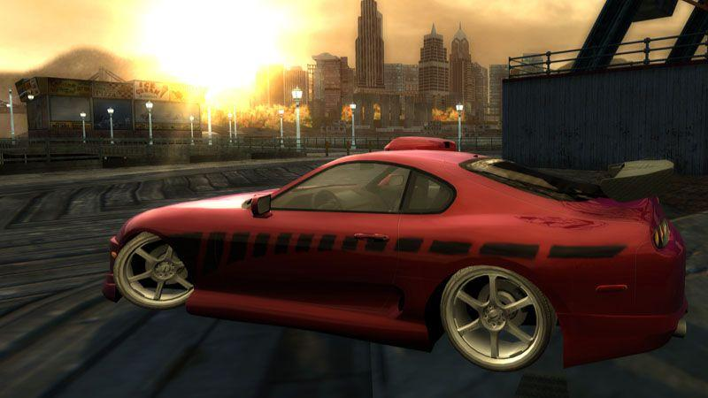 |
Hollywood filmlerinden fırlama polis kovalamacaları,zorlu sokak yarışları,çeşitli modifiye seçenekleri,yüksek kalitede hazırlanmış ara videolar ve seslendirmeler… NFS’nin efsanevi oyunu Need for Speed: Most Wanted ilk oyunu ile indirmenize hazır.
Tür: Yarış
Platform: PC
Boyut: : 2.15 GB
Crack: CPY
Tarih: Kasım 2005
Serial:THQ8-YUR4-8QQT-R8QC-VRLD
Dil: İngilizce
| 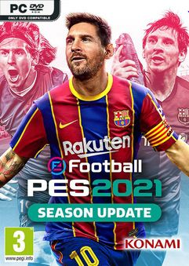 | 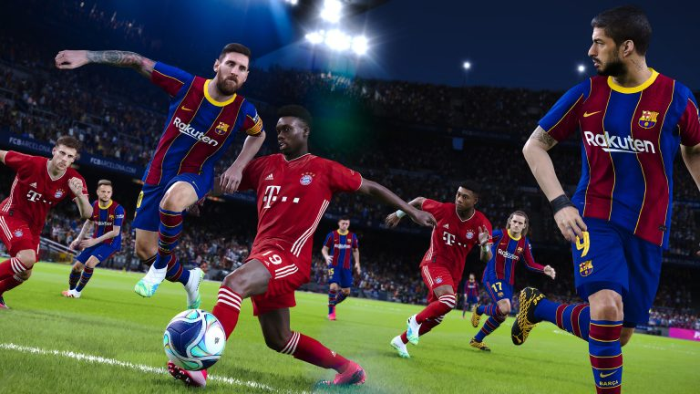 | 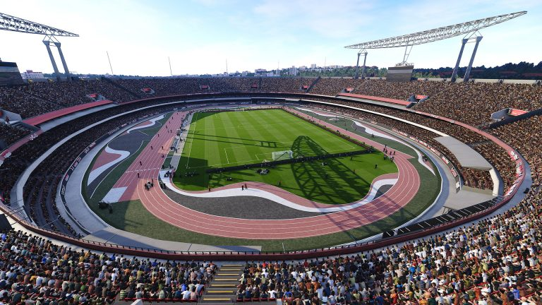 | 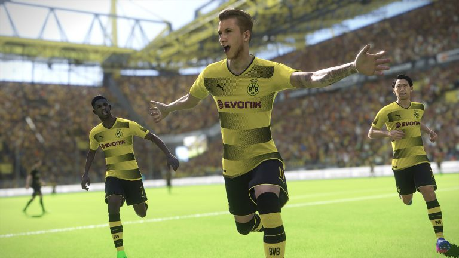 |
Bazı lisanslı liglerin ve takımların en son verilerinin güncelleme sonrası yayında mevcut olmayacağını lütfen unutmayın. Bu güncellemeyi indirmek için internet bağlantısına ihtiyacınız olacak. Daha fazla bilgi için resmi web sitesine göz atabilirsiniz. *COVID-19’un devam eden etkisi sebebiyle gerçek yaşamdaki bazı futbol liglerinde ve/veya turnuvalarında ani kural değişiklikleri yaşanabilir. Bunun sonucunda oyundaki kurallar, gerçek yaşamdaki karşılıklarıyla kusursuz bir şekilde örtüşmeyebilir. Gelecek güncellemelerde önceden haber verilmeden ligleri ve turnuvaları etkileyen başka değişiklikler de yapılabilir. eFootball PES 2021 Season Update* ile PES’in 25. yılını kutluyoruz; bu güncellemeyi şimdi özel yıl dönümü fiyatıyla edinebilirsiniz! *Bu ürün, eFootball PES 2020’nin (2019 Eylül ayında yayınlanmıştı) güncellenmiş sürümüdür ve en yeni oyuncu verilerini ve kulüp kadrolarını içerir. Bazı liglerin kadrolarının yayından sonra güncelleneceğini lütfen unutmayın. eFootball PES 2021 Season Update, geçen seneki ödüllü eFootball PES 2020 oyununun yanında yeni sezon için çeşitli takım ve oyuncu güncellemeleri içerir. Ayrıca UEFA EURO 2020™ moduna da sahiptir ve tüm bunlar özel yıl dönümü fiyatıyla geliyor! ・En Büyük Kulüpler Almanya şampiyonu FC Bayern München, İspanya şampiyonu FC Barcelona, dünya devleri Manchester United ve özel PES partneri Juventus gibi dünya futbolunun en büyük takımlarıyla oynayın! ・myClub Sıfırdan kendi hayal takımınızı kurarak dünyanın dört bir yanından insan rakiplerle karşı karşıya gelin. ・Matchday Gerçek yaşamdaki futbol rekabetlerinin tema olarak alındığı online PvP etkinliklerinde ve diğer büyük maçlarda mücadele edin. ・Ana Lig Bu sürükleyici tek oyuncu modunda bir futbol kulübünün başına geçin ve takımınızı zirveye taşıyın.
Tür: Spor
Platform: PC
Boyut: 38 GB
Crack: CPY
Tarih: 15 Eyl 2020
Dil: Türkçe
| 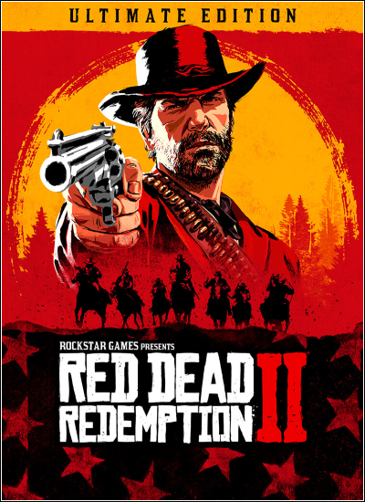 | 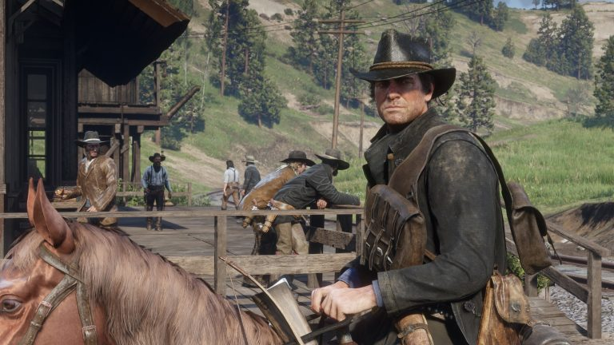 | 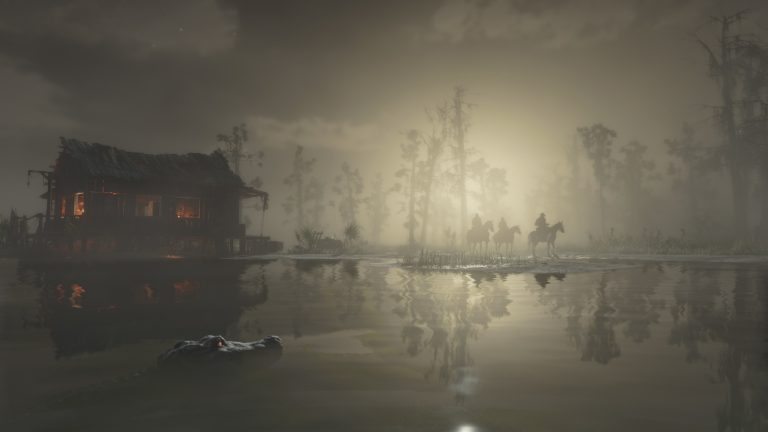 | 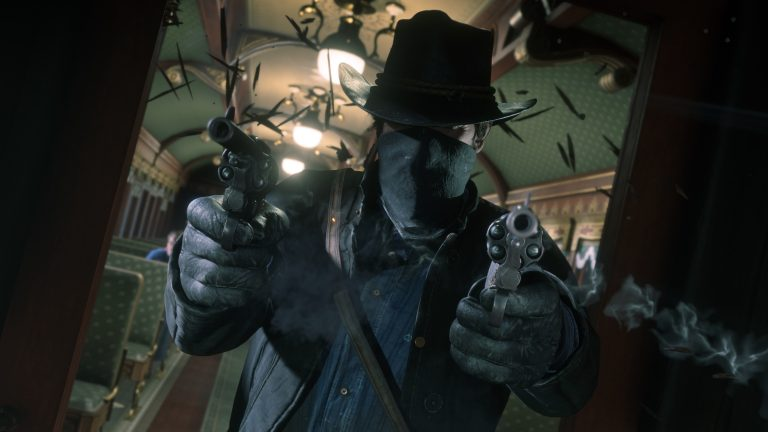 | 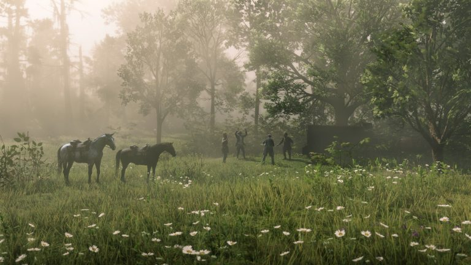 | 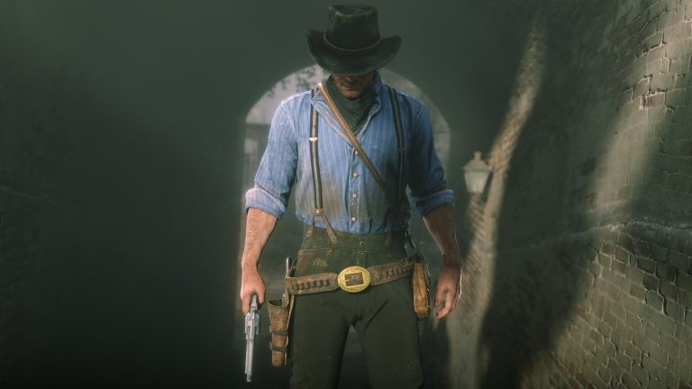 |
Amerika, 1899. Vahşi batı dönemi artık sona eriyor, son kalan kanunsuz çeteler de kanun adamlarının nefesini enselerinde hissediyor. Teslim olmayan ve boyun eğmeyenler öldürülüyor.Batıda, Blackwater kasabasındaki soygun girişimlerinde işleri ters giden Arthur Morgan ve Van der Linde çetesi kaçmaya başlıyor. Federal ajanlar ve ülkenin en iyi ödül avcılarının amansız takibi altında çete üyeleri hayatta kalabilmek için soyguna, yağmaya ve dövüşmeye devam ederek Amerikanın kalbindeki çetin toprakları geçmek zorunda. Bu süreçte iç çatışmaları da iyice derinleşen çete artık dağılmanın eşiğine gelirken Arthur da zor bir seçimle karşı karşıya: onu yetiştiren çeteye sadık mı kalacak yoksa kendi ideallerinin peşinden mi gidecek?
Tür: Aksiyon, Macera, Oyun, Yıldız Oyunlar
Platform: PC
Boyut: 119 GB
Crack: EMPRESS
Tarih: 5 Kasım 2019
Dil: İngilizce
| 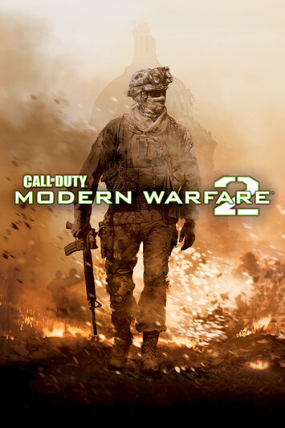 | 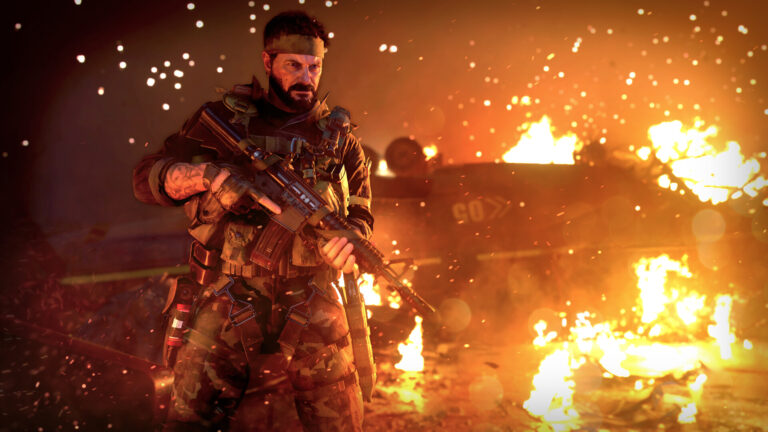 | 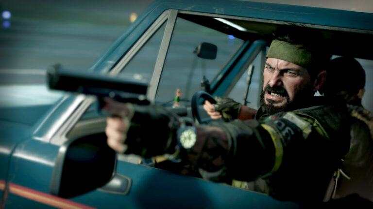 | 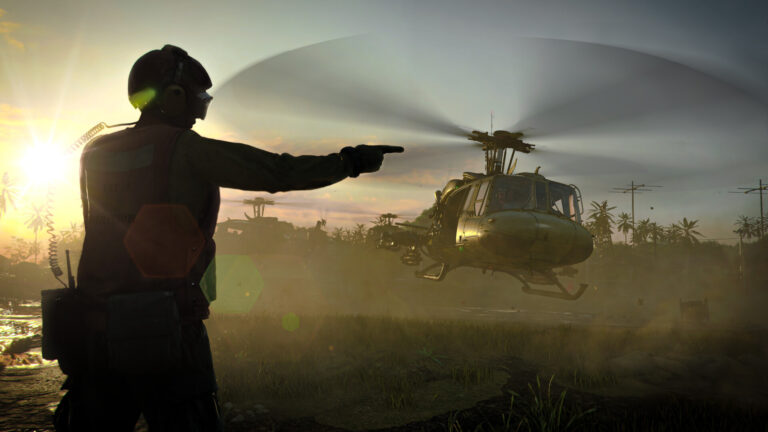 | 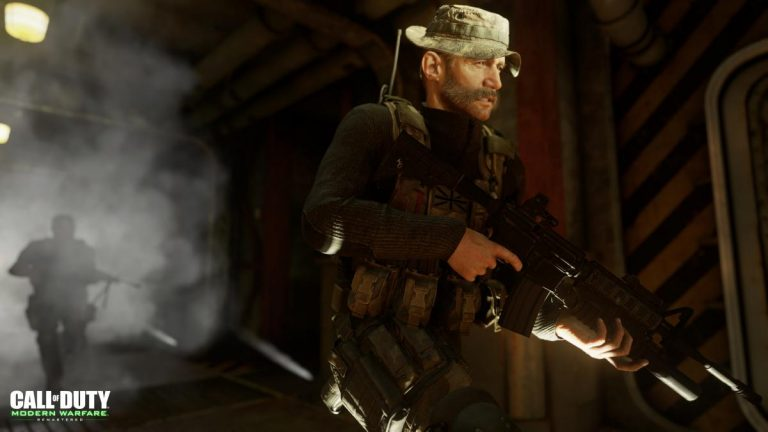 |
Modern Warfare 2, grafiksel anlamda rakiplerinin çok ilerisinde, en kısa tanımıyla budur. Ses ve müzikler Oyunda hareketli müzik yok. Daha çok dramatik müziklere yer verilmiş. Çünkü Warfare 2, dramatik olayların yaşandığı bir oyun. Müzikler, benim hoşuma gitti. Yaşanılan olaylara göre son derece uygun müzikler hazırlanmış. Ses, oyunun albenisi. Karakter seslendirmeleri, patlama sesleri ve mermilerin oluşturduğu yankı ciddi bir şekilde mükemmel.
Tür: Oyun, Aksiyon, Savaş
Platform: PC
Boyut: 11.07 GB
Crack: SKIDROW
Tarih: 10-11-2009
Dil: İngilizce
| 1 | 2 | 3 | 4 |
2024 yılı Ekim ayında, oyun satışları %3 oranında bir artış gösterdi. Bu artış özellikle PC ve konsol oyunlarında belirgin olurken, mobil oyunlar önceki aylara kıyasla düşüş gösterdi. Bu artışın ardındaki nedenler arasında popüler oyunların yeni sürümlerinin çıkışı, tatil sezonuna hazırlık ve büyük çaplı oyun etkinliklerinin etkisi önemli olmuştur. Konsol ve PC oyunlarının yüksek satış performansı, güçlü içerik güncellemeleri ve geniş çaplı pazarlama kampanyaları gibi faktörlerde satışı artıran etkenler arasında sayılabilir...
Haberin devamı için tıklayın.Rockstar Store, Epic Games ve Steam üzerinden oluşturulabilecek ön siparişlerin ne zaman başlayacağı önümüzdeki günlerde belli olacak. Red Dead Redemption ve ek paketi Undead Nightmare için PC sistem gereksinimlerini aşağıdaki tabloda inceleyebilirsiniz...
Haberin devamı için tıklayın.GeForce NOW powered by GAME+, NVIDIA’nın bulut tabanlı oyun stream hizmetidir ve doğrudan bulut üzerinden cihazına gerçek zamanlı oyun deneyimi sunar. Desteklenen oyunlar için bulut kayıtlarıyla, nerede olursan ol, oyununu kaldığın yerden, desteklenen herhangi bir cihazda devam ettirebilirsiniz ve GAME+ ayrıcalığı ile Türkiye'ye özel GeForce NOW sunucularından ulaşabilirsiniz. Yeni başlayanlar için oynaması ücretsiz bir planı da bulunuyor. Kütüphane de bulunan ücretsiz oyunları oynayabilir ve Steam, Epic Games Store’da kendi hesabınızdaki oyunlarınıza bulut erişimi sağlayabilirsiniz. Bazı stüdyolar oyunlarını Geforce Now kullanımına kapatmış olsalar da yinede oynayabileceğiniz binlerce oyun var. GeForce Now’ı ücretsiz olarak kullanmak mümkün ancak bazı kısıtlamalar mevcut. Sisteme yoğun talep olduğunda sıra beklemenin yanı sıra seansların bir saat ile sınırlandırılması oyun keyfini baltalıyor. Ücretli üyelik seçeneği olan Founders sayesinde hem bu sınırlar ortadan kalkıyor, hem de destekleyen oyunlar için NVIDIA’nın RTX teknolojisi aktif hale geliyor...
Haberin devamı için tıklayın.| Telegram |